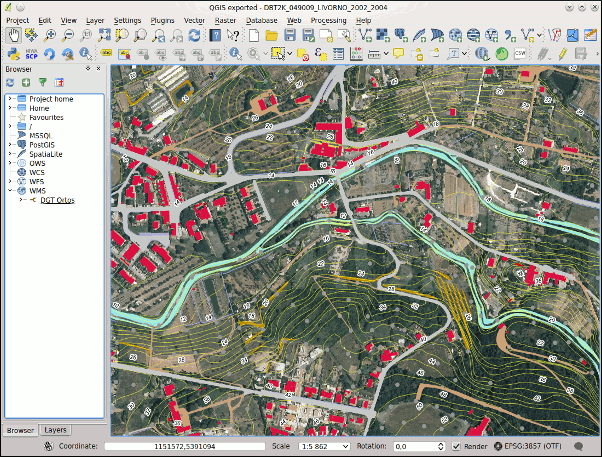
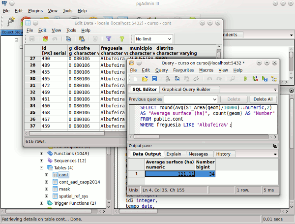
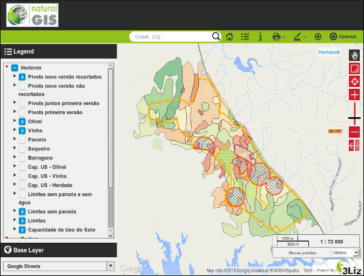

As nossas formações SIG Open Source
Damos formação de elevada qualidade didáctica utilizando as últimas versões dos software disponíveis. Realizamos formações com conteudos padrão ou personalizados, abertas ao público, nas instalações do cliente ou em contexto de trabalho. Somos especialistas em: QGIS (Desktop, Server e Web), PostgreSQL/PostGIS e Python para QGIS.
Passe o rato nas imagens abaixo, para obter mais detalhes




